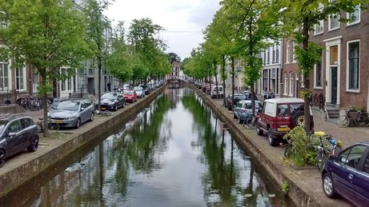
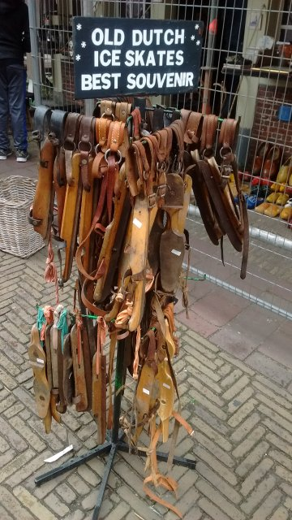
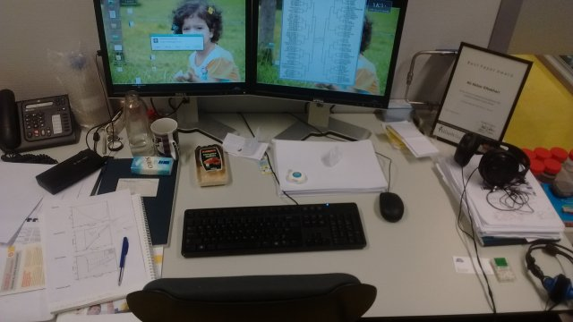

کانالهای دلفت از این زاویه خیلی به هم شبیهاند. کنارشان که راه میروی اما میبینی چقدر فرق دارد کانال با کانال. مهمترین شباهتشان شاید این باشد که هر کس از آبشان بنوشد اسهال خواهد گرفت (اسهال را شنیدهام که با شدن هم به کار میبرند؛ اسهال خواهد شد). این فصل سال یک ویژگی مشترک دیگرشان نیلوفرهای آبی است. همانی که در برنامه کودک میدیدیم. برگهای سبز که دقیقاً خوابیدهاند روی سطح آب. گل هم میدهند. بیشتر سفید. گاهی هم صورتی و زرد و کمتر آبی.

هوای هلند اگر به اندازه کافی سرد شود، البته که به اندازه سرد میشود، اگر بیشتر سرد شود همه کانالهایی که برای تخلیه آب استفاده میکنند یخ میزند و مسابقات ماراتن اسکیت برگزار میشود. یکی از آرزوهای هر هلندی شرکت در این مسابقه است. در طول اقامت ما در هلند یک بار کانالها حدود یک هفته یخ زد اما زود آب شد و به مسابقه نرسید. همان قدرش هم برای ایجاد شور و هیجان در بین هلندیها کافی بود. حالا اما احتمالا هلندیها از برگزاری مسابقه ناامید شدهاند و اسکیتهای اجدادی را گذاشتهاند کنار خیابان برای انداختن به توریستهای فت و فراوان دلفت.

میز کارم. ممعمولا از اینی که میبینید نامرتبتر است. پیادهروی برای برگشتن به خانه از همینجا شروع میشود.